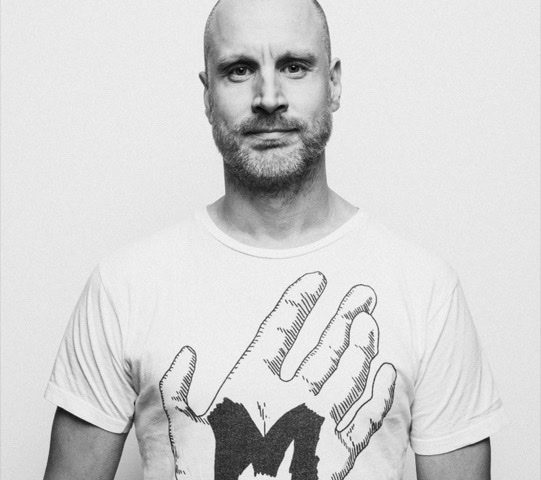

WHERE THEY ARE NOW — continued

Misko Iho, 2021. Photo self-published by the subject, via Wikimedia Commons, CC0
PIXEL — Misko Iho · @MiskoIho
Painted most of this demo’s art. After the scene he spent a few months in the US on Epic Pinball graphics, then directed music videos (Darude, Chisu, Haloo Helsinki!) and commercials — Disney, Lidl, Flonase. His short film The Patient won Best Direction at Super Shorts in London.